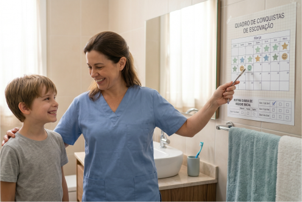

O monitoramento da rotina de higiene bucal é uma ferramenta prática que auxilia cuidadores e profissionais da saúde a acompanhar a adaptação do indivíduo ao processo de escovação, identificar dificuldades e ajustar estratégias de manejo ao longo do tempo.
Esse tipo de acompanhamento é especialmente útil em pacientes com Transtorno do Espectro Autista, nos quais a previsibilidade, a repetição e o registro sistemático das respostas comportamentais podem favorecer a consolidação de hábitos.
O estabelecimento de uma rotina estruturada de higiene bucal pode representar um desafio para indivíduos com necessidades sensoriais e comportamentais específicas.
O uso de checklists de acompanhamento pode facilitar o registro diário das atividades realizadas, permitindo observar progressos, identificar padrões de resistência e avaliar a eficácia das estratégias de manejo utilizadas.
